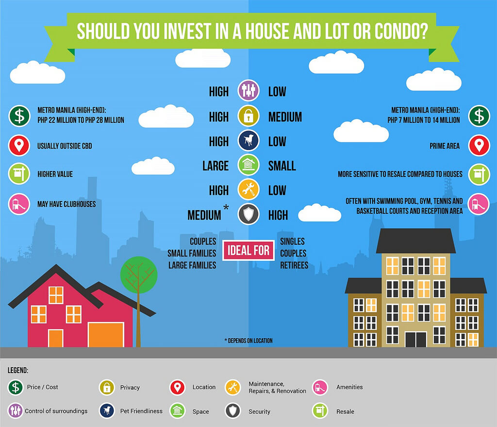

11 Passive Income Ideas To Help You Make Money In 2020 | Bankrate
 Open navigation Mortgages Banking Credit cards Loans Investing Home equity Insurance Retirement Sign in Main Menu Mortgages Mortgages overviewGet the best rates
Mortgage rates 30-year mortgage rates 20-year mortgage rates 15-year mortgage rates 10-year mortgage rates FHA loan rates VA loan rates Jumbo loan rates Mortgage rate newsRefinance your mortgage
Refinance rates 30-year refinance rates 20-year refinance rates 15-year refinance rates 10-year refinance rates FHA refinance rates VA refinance rates Jumbo refinance ratesCalculate and get advice
Mortgage calculator Mortgage refinance calculator How much house can you afford? Amortization calculator Mortgage payment calculator All mortgage calculators Where rates are trending Understanding current interest rates When to pay off your mortgage earlyLender Reviews
Quicken Loans Mortgage Loandepot Mortgage Mr. Cooper Mortgage Amerisave Mortgage Corporation Freedom Mortgage United Wholesale Mortgage Sage Mortgage PennyMac Mortgage All mortgage lender reviewsElevate your Bankrate experience
Get insider access to our best financial tools and content
Get started Main Menu Banking Banking overviewCompare accounts
CD rates Savings accounts Money market accounts 1-year CD rates 3-year CD rates 5-year CD rates Checking accounts Best banksUse calculators
Savings calculator CD calculator Compound savings calculator All banking calculatorsGet advice
How to save money Federal Reserve news What is a savings account? What is a money market account? Which certificate of deposit account is best? How to open a savings account Tax adviceBank reviews
Capital One Bank Marcus by Goldman Sachs American Express National Bank CIT Bank Synchrony Bank Barclays Bank All bank reviewsElevate your Bankrate experience
Get insider access to our best financial tools and content
Get started Main Menu Credit cards Credit cards overviewCompare by category
Best credit cards of 2020 Rewards Travel Airline Cash back No annual fee Balance transfer 0% APR StudentCompare by credit needed
Excellent credit Good credit Fair credit Bad credit No credit history Secured credit cardsCompare by issuer
American Express Bank of America Capital One Chase Citi Discover Wells FargoGet advice
CardMatch™ Credit card reviews Credit card payoff calculator Balance transfer calculator All credit card calculators Improving your creditLooking for the perfect credit card?
Narrow your search with CardMatch™
Find your match Main Menu Loans Loans overviewGet the best rates
Best personal loan rates Low-interest personal loans Personal loans for bad credit Personal loans for good credit Personal loans for excellent credit Best home improvement loan rates Best debt consolidation loan rates Student loan rates Student loan refinance rates Student loan interest rates Auto loan ratesLender reviews
Personal loan reviews Best Egg review LightStream review PNC review LendingClub review Marcus review Student loan reviews Sallie Mae review Sofi review Discover reviewUse calculators
Loan calculator Personal loan calculator Loan payment calculator Student loan calculator Auto loan calculator Auto refinance calculator All calculatorsKnowledge base
Personal loans Student loans Debt consolidation loans Home improvement loans Medical loans Debt management Auto loansElevate your Bankrate experience
Get insider access to our best financial tools and content
Get started Main Menu Investing Investing overviewBest of
Best investments Best online brokers for stocks Best online brokers for beginners Best online brokers for mutual fundsBrokerage reviews
TD Ameritrade Review Merrill Edge Review Ally Invest Review Fidelity Review Charles Schwab Review Vanguard Review Interactive Brokers Review Robinhood Review Tradestation Review E*Trade Review WellsTrade Review All brokerage reviewsUse calculators
Investment earnings calculator Annuity calculator All investing & CD calculatorsGet advice
What is the long-term capital gains tax? Passive income ideas to help you make money How to buy stocksElevate your Bankrate experience
Get insider access to our best financial tools and content
Get started Main Menu Home equity Home equity overviewGet the best rates
Home equity loan rates Home equity line of credit rates Current interest ratesLender reviews
Home equity lender reviews Figure review Third Federal Savings & Loan review Discover review Spring EQ reviewUse calculators
Home equity calculator Loan vs. line of credit calculator Debt consolidation calculator HELOC payoff calculator All home equity calculatorsKnowledge base
Home equity loans What is a home equity loan? How to borrow from home equity HELOC vs. Home equity loan Consolidate your debt using home equity Home equity loans with bad creditElevate your Bankrate experience
Get insider access to our best financial tools and content
Get started Main Menu Insurance Insurance overviewInsurance types
Car insurance Homeowner s insurance Health insurance Life insuranceBest of
Best car insurance companies Best home insurance companies Best life insurance companies Best cheap car insurance Top car insurance comparisonCompany reviews
Geico Insurance State Farm Insurance Progressive Insurance Allstate Insurance Liberty Mutual Insurance Nationwide Insurance The General Insurance Farmers Insurance American Family Insurance Erie Insurance Amica Insurance Travelers InsuranceInsurance by state
Car Insurance California Car Insurance Florida Car Insurance Georgia Car Insurance Michigan Car Insurance New Jersey Car Insurance New York Car Insurance North Carolina Car Insurance Pennsylvania Car Insurance Texas Home Insurance Florida Home Insurance TexasElevate your Bankrate experience
Get insider access to our best financial tools and content
Get started Main Menu Retirement Retirement overviewGet advice
Best Roth IRA accounts Best retirement plans How to open a Roth IRA 401(k) rollover guide Roth IRA vs. Roth 401(k)Use calculators
401(k) retirement calculator Retirement savings calculator Roth IRA calculator IRA minimum distribution calculator Social security benefits calculator All retirement calculatorsMore information
What is an IRA? What is a Roth 401(k)? 401(k) contribution limits Contributing to IRA during retirement Best age for Social Security retirement benefits Roth IRA 5 year ruleElevate your Bankrate experience
Get insider access to our best financial tools and content
Get started My Dashboard Profile Email preferences Support Logout Sign In Create Account Open search Close search Dashboard Profile Support Investing Advertiser Disclosure11 passive income ideas to help you make money in 2020
Advertiser Disclosure
We are an independent, advertising-supported comparison service. Our goal is to help you make smarter financial decisions by providing you with interactive tools and financial calculators, publishing original and objective content, by enabling you to conduct research and compare information for free - so that you can make financial decisions with confidence.
Our articles, interactive tools, and hypothetical examples contain information to help you conduct research but are not intended to serve as investment advice, and we cannot guarantee that this information is applicable or accurate to your personal circumstances. Any estimates based on past performance do not a guarantee future performance, and prior to making any investment you should discuss your specific investment needs or seek advice from a qualified professional.
How We Make Money.
The offers that appear on this site are from companies that compensate us. This compensation may impact how and where products appear on this site, including, for example, the order in which they may appear within the listing categories. But this compensation does not influence the information we publish, or the reviews that you see on this site. We do not include the universe of companies or financial offers that may be available to you.
Editorial disclosure.
All reviews are prepared by our staff. Opinions expressed are solely those of the reviewer and have not been reviewed or approved by any advertiser. The information, including any rates, terms and fees associated with financial products, presented in the review is accurate as of the date of publication.
By James Royal James Royal s Twitter profile May. 19, 2020 / 9 min read Image Credit:@lelia_milaya/Twenty20
Share this pageShare
Facebook Twitter LinkedIn EmailAt Bankrate we strive to help you make smarter financial decisions. While we adhere to strict editorial integrity , this post may contain references to products from our partners. Here’s an explanation for how we make money.
Editorial Integrity
Bankrate follows a strict editorial policy, so you can trust that we’re putting your interests first. Our award-winning editors and reporters create honest and accurate content to help you make the right financial decisions.
Key Principles
We value your trust. Our mission is to provide readers with accurate and unbiased information, and we have editorial standards in place to ensure that happens. Our editors and reporters thoroughly fact-check editorial content to ensure the information you’re reading is accurate. We maintain a firewall between our advertisers and our editorial team. Our editorial team does not receive direct compensation from our advertisers.
Editorial Independence
Bankrate’s editorial team writes on behalf of YOU – the reader. Our goal is to give you the best advice to help you make smart personal finance decisions. We follow strict guidelines to ensure that our editorial content is not influenced by advertisers. Our editorial team receives no direct compensation from advertisers, and our content is thoroughly fact-checked to ensure accuracy. So, whether you’re reading an article or a review, you can trust that you’re getting credible and dependable information.
How We Make Money
You have money questions. Bankrate has answers. Our experts have been helping you master your money for over four decades. We continually strive to provide consumers with the expert advice and tools needed to succeed throughout life’s financial journey.
Bankrate follows a strict editorial policy, so you can trust that our content is honest and accurate. Our award-winning editors and reporters create honest and accurate content to help you make the right financial decisions. The content created by our editorial staff is objective, factual, and not influenced by our advertisers.
We’re transparent about how we are able to bring quality content, competitive rates, and useful tools to you by explaining how we make money.
Bankrate.com is an independent, advertising-supported publisher and comparison service. We are compensated in exchange for placement of sponsored products and, services, or by you clicking on certain links posted on our site. Therefore, this compensation may impact how, where and in what order products appear within listing categories. Other factors, such as our own proprietary website rules and whether a product is offered in your area or at your self-selected credit score range can also impact how and where products appear on this site. While we strive to provide a wide range offers, Bankrate does not include information about every financial or credit product or service.
It’s easy to think of passive income as money earned while sitting on a beach sipping mojitos, but there is lots of work involved, says financial coach and retired hedge fund manager Todd Tresidder.
Still, passive income can be a great supplementary source of funds for many people, and it can prove to be an especially valuable lifeline during a recession or during other tough times, such as the government lockdown imposed in response to the coronavirus pandemic . Passive income can keep some money flowing when you lose a job or otherwise experience some financial hardship.
If you’re worried about being able to save enough of your earnings to meet your retirement goals , building wealth through passive income is a strategy that might appeal to you, too.
What is passive income?
Passive income includes regular earnings from a source other than an employer or contractor. The Internal Revenue Service (IRS) says passive income can come from two sources : rental property or a business in which one does not actively participate, such as being paid book royalties or stock dividends.
“Many people think that passive income is about getting something for nothing,” Tresidder says. “It has a ‘get-rich-quick’ appeal … but in the end, it still involves work. You just give the work upfront.”
In practice, you may do some or all of the work upfront, but passive income often involves some additional labor along the way, too. You may have to keep your product updated or your rental property well-maintained, in order to keep the passive dollars flowing.
11 passive income ideas for building wealth
If you’re thinking about creating a passive income stream, check out these 11 strategies and learn what it takes to be successful with them, while also understanding the risks associated with each idea.
1. Selling information products
One popular strategy for passive income is establishing an information product, such as an e-book, or an audio or video course, then kicking back while cash rolls in from the sale of your product. Courses can be distributed and sold through sites such as Udemy , SkillShare and Coursera .
Opportunity: Information products can deliver an excellent income stream, because you make money easily after the initial outlay of time.
Risk: “It takes a massive amount of effort to create the product,” Tresidder says. “And to make good money from it, it has to be great. There’s no room for trash out there.”
Tresidder says you must build a strong platform, market your products and plan for more products if you want to be successful.
“One product is not a business unless you get really lucky,” Tresidder says. “The best way to sell an existing product is to create more excellent products.”
Once you master the business model, you can generate a good income stream, he says.
2. Rental income
Investing in rental properties is an effective way to earn passive income. But it often requires more work than people expect.
If you don’t take the time to learn how to make it a profitable venture, you could lose your investment and then some, says John H. Graves, an Accredited Investment Fiduciary (AIF) in the Los Angeles area and author of “The 7% Solution: You Can Afford a Comfortable Retirement.”
Opportunity: To earn passive income from rental properties , Graves says you must determine three things:
How much return you want on the investment. The property’s total costs and expenses. The financial risks of owning the property.For example, if your goal is to earn $10,000 a year in rental income and the property has a monthly mortgage of $2,000 and costs another $300 a month for taxes and other expenses, you’d have to charge $3,133 in monthly rent to reach your goal.
Risk: There are a few questions to consider: Is there a market for your property? What if you get a tenant who pays late or damages the property? What if you’re unable to rent out your property? Any of these factors could put a big dent in your passive income.
3. Affiliate marketing
With affiliate marketing, website owners, social media “influencers” or bloggers promote a third party’s product by including a link to the product on their site or social media account. Amazon might be the most well-known affiliate partner, but eBay, Awin and ShareASale are among the larger names, too.
Opportunity: When a visitor clicks on the link and makes a purchase from the third-party affiliate, the site owner earns a commission.
Affiliate marketing is considered passive because, in theory, you can earn money just by adding a link to your site or social media account. In reality, you won’t earn anything if you can’t attract readers to your site to click on the link and buy something.
Risk: If you’re just starting out, you’ll have to take time to create content and build traffic.
4. Invest in a high-yield CD
Investing in a high-yield certificate of deposit (CD) at an online bank can allow you to generate a passive income and also get one of the highest interest rates in the country. You won’t even have to leave your house to make money.
Opportunity: To make the most of your CD, you’ll want to do a quick search of the nation’s top CD rates . It’s usually much more advantageous to go with an online bank rather than your local bank, because you’ll be able to select the top rate available in the country. And you’ll still enjoy a guaranteed return of principal up to $250,000, if your financial institution is backed by the FDIC .
Risk: As long as your bank is backed by the FDIC, your principal is safe. So investing in a CD is about as safe a return as you can find. Over time, the biggest risk with fixed income investments such as CDs is rising inflation, but that doesn’t appear to be a problem in the near future.
5. Peer-to-peer lending
A peer-to-peer (P2P) loan is a personal loan made between you and a borrower, facilitated through a third-party intermediary such as Prosper or LendingClub.
Opportunity: As a lender, you earn income via interest payments made on the loans. But because the loan is unsecured, you face the risk of default.
To cut that risk, you need to do two things:
Diversify your lending portfolio by investing smaller amounts over multiple loans. At Prosper.com, the minimum investment per loan is $25. Analyze historical data on the prospective borrowers to make informed picks.Risk: It takes time to master the metrics of P2P lending, so it’s not entirely passive. Because you’re investing in multiple loans, you must pay close attention to payments received. Whatever you make in interest should be reinvested if you want to build income. Economic recessions can also make high-yielding personal loans a more likely candidate for default, too.
6. Dividend stocks
Shareholders in companies with dividend-yielding stocks receive a payment at regular intervals from the company. Companies pay cash dividends on a quarterly basis out of their profits, and all you need to do is own the stock. Dividends are paid per share of stock, so the more shares you own, the higher your payout.
Opportunity: Since the income from the stocks isn’t related to any activity other than the initial financial investment, owning dividend-yielding stocks can be one of the most passive forms of making money.
Risk: The tricky part is choosing the right stocks. Graves warns that too many novices jump into the market without thoroughly investigating the company issuing the stock. “You’ve got to investigate each company’s website and be comfortable with their financial statements,” Graves says. “You should spend two to three weeks investigating each company.”
That said, there are ways to invest in dividend-yielding stocks without spending a huge amount of time evaluating companies. Graves advises going with exchange-traded funds, or ETFs . ETFs are investment funds that hold assets such as stocks, commodities and bonds, but they trade like stocks.
“ETFs are an ideal choice for novices because they are easy to understand, highly liquid, inexpensive and have far better potential returns because of far lower costs than mutual funds,” Graves says.
Another key risk is that stocks or ETFs can move down significantly in short periods of time, especially during times of uncertainty, as in early 2020 when the coronavirus crisis shocked financial markets. Economic stress can also cause some companies to cut their dividends entirely, while diversified funds may feel less of a pinch.
Compare your investing options with Bankrate’s brokerage reviews .
7. Savings accounts
It doesn’t get any more passive than putting your money in a savings account at the bank or one of the many online banks offering high yields . Then sit back and watch the interest mount up.
Opportunity: Your best bet here is going with an online bank , since they typically offer the highest rates and you can usually easily transfer your money between your primary bank and the online bank. Online rates can often be 10 times higher or more than what your local bank may offer.
Risk: If you invest in an account insured by the FDIC, you have almost no risk at all up to a $250,000 threshold per account type per bank. The biggest risk is probably that interest rates tend to fall when the economy weakens, and in this case, you would have to endure lower payouts that potentially don’t earn enough to beat inflation. That means you’ll lose purchasing power over time.
8. REITs
A REIT is a real estate investment trust , which is a fancy name for a company that owns and manages real estate. REITs have a special legal structure so that they pay little or no corporate income tax if they pass along most of their income to shareholders.
Opportunity: You can purchase REITs on the stock market just like any other company or dividend stock. You’ll earn whatever the REIT pays out as a dividend, and the best REITs have a record of increasing their dividend on an annual basis, so you could have a growing stream of dividends over time.
Like dividend stocks, individual REITs can be more risky than owning an ETF consisting of dozens of REIT stocks. A fund provides immediate diversification and is usually a lot safer than buying individual stocks — and you’ll still get a nice payout.
Risk: Just like dividend stocks, you’ll have to be able to pick the good REITs, and that means you’ll need to analyze each of the businesses that you might buy — a time-consuming process. And while it’s a passive activity, you can lose a lot of money if you don’t know what you’re doing .
REIT dividends are not protected from tough economic times, either. If the REIT doesn’t generate enough income, it will likely have to cut its dividend or eliminate it entirely. So your passive income may get hit just when you want it most.
9. A bond ladder
A bond ladder is a series of bonds that mature at different times over a period of years. The staggered maturities allow you to decrease reinvestment risk, which is the risk of tying up your money when bonds offer too-low interest payments.
Opportunity: A bond ladder is a classic passive investment that has appealed to retirees and near-retirees for decades. You can sit back and collect your interest payments, and when the bond matures, you “extend the ladder,” rolling that principal into a new set of bonds. For example, you might start with bonds of one year, three years, five years and seven years.
In a year, when the first bond matures, you have bonds remaining of two years, four years and six years. You can use the proceeds from the recently matured bond to buy another one year or roll out to a longer duration, for example, an eight-year bond.
Risk: A bond ladder eliminates one of the major risks of buying bonds – the risk that when your bond matures you have to buy a new bond when interest rates might not be favorable.
Bonds come with other risks, too. While Treasury bonds are backed by the federal government, corporate bonds are not, so you could lose your principal. And you’ll want to own many bonds to diversify your risk and eliminate the risk of any single bond hurting your overall portfolio.
Because of these concerns, many investors turn to bond ETFs, which provide a diversified fund of bonds that you can set up into a ladder, eliminating the risk of a single bond hurting your returns.
10. Rent out a room in your house
This straightforward strategy takes advantage of space that you’re probably not using anyway and turns it into a money-making opportunity .
Opportunity: You can list your space on any number of websites, such as Airbnb, and set the rental terms yourself. You’ll collect a check for your efforts with minimal extra work, especially if you’re renting to a longer-term tenant.
Risk: You don’t have a lot of financial downside here, though letting strangers stay in your house is a risk that’s atypical of most passive investments. Tenants may deface or even destroy your property or even steal valuables, for example.
11. Advertise on your car
You may be able to earn some extra money by simply driving your car around town . Contact a specialized advertising agency, which will evaluate your driving habits, including where you drive and how many miles. If you’re a match with one of their advertisers, the agency will “wrap” your car with the ads at no cost to you. Agencies are looking for newer cars, and drivers should have a clean driving record.
Opportunity: While you do have to get out and drive, if you’re already putting in the mileage anyway, then this is a great way to earn hundreds per month with little or no extra cost. Drivers can be paid by the mile.
Risk: If this idea looks interesting, be extra careful to find a legitimate operation to partner with. Many fraudsters set up scams in this space to try and bilk you out of thousands.
How many streams of income should you have?
There is no “one size fits all” advice when it comes to generating income streams. How many sources of income you have should depend upon where you are financially, and what your financial goals for the future are . But having at least a few is a good start.
“You’ll catch more fish with multiple lines in the water,” says Greg McBride, CFA, chief financial analyst at Bankrate. “In addition to the earned income generated from your human capital, rental properties, income-producing securities and business ventures are a great way to diversify your income stream.”
Learn more:
Saving vs. investing: What’s more important and why? Everything to know about IRAs How to apply for unemployment benefitsYou may also like
7 ways to make extra income in retirement
The 15 best investments of 2020
11 best investments in 2020
About
About us Press room Careers Advertise with us Site mapHelp
Contact us Compare rates Latest news Popular topics GlossaryLegal
Privacy policy / California privacy policy Do not sell my info Understanding Bankrate’s averages Terms of use GLBA annual notice LicensesHow we make money
Bankrate.com is an independent, advertising-supported publisher and comparison service. Bankrate is compensated in exchange for featured placement of sponsored products and services, or your clicking on links posted on this website. This compensation may impact how, where and in what order products appear. Bankrate.com does not include all companies or all available products.
Bankrate, LLC NMLS ID# 1427381 | NMLS Consumer Access
BR Tech Services, Inc. NMLS ID #1743443 | NMLS Consumer Access
© 2020 Bankrate, LLC. A Red Ventures company. All Rights Reserved.